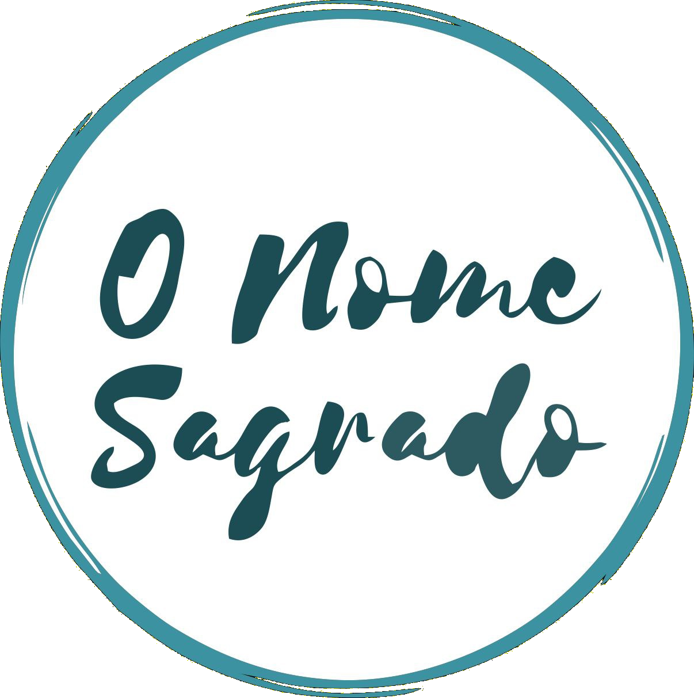

<ec-spinner></ec-spinner>
<div [ngClass]="{'blur': blur}" class="container full">
    <div *ngIf="authenticatedUser; then thenBlock else elseBlock"></div>
</div>

<ng-template #thenBlock>
    <div class="container column" style="width: 100vw">
        <mat-toolbar color="primary" class="toolbar mat-elevation-z6">
            <button mat-button class="btn-menu" (click)="menu.toggle()">
                <mat-icon>menu</mat-icon>
            </button>
            <div class="container row between full-width align-center">
                <div class="container row margin-8">
                    <div class="container column center">
                        <span class="title">{{"HEADER.TITLE" | translate}}</span>
                    </div>
                    <div class="container logo">
                        
                    </div>
                </div>
                <div class="container column center">
                    <div>
                        <button mat-icon-button [routerLink]="['home']" aria-label="Home">
                            <mat-icon>home</mat-icon>
                        </button>
                        <button mat-icon-button [matMenuTriggerFor]="menulang">
                            <mat-icon>language</mat-icon>
                        </button>
                        <mat-menu #menulang="matMenu">
                            <button mat-menu-item (click)="alterlang('pt')">{{"BUTTONS.LANG_PT" | translate}}</button>
                            <button mat-menu-item (click)="alterlang('en')">{{"BUTTONS.LANG_EN" | translate}}</button>
                        </mat-menu>

                        <button mat-icon-button [matMenuTriggerFor]="menuUser">
                            <mat-icon>account_circle</mat-icon>
                        </button>
                        <mat-menu #menuUser="matMenu">
                            <button mat-menu-item (click)="logout()">
                                <mat-icon>settings</mat-icon>
                                <span>Settings</span>
                            </button>
                            <button mat-menu-item (click)="logout()">
                                <mat-icon>person</mat-icon>
                                <span>Profile</span>
                            </button>
                            <button mat-menu-item (click)="logout()">
                                <mat-icon>logout</mat-icon>
                                <span>Logout</span>
                            </button>
                        </mat-menu>
                    </div>
                </div>
            </div>
        </mat-toolbar>


        <ec-menu #menu class="container full row">
            <router-outlet></router-outlet>
        </ec-menu>

        <footer class="footer" color="primary">
            <div class="container row center margin-8 full-height">
                <span>Api O nome sagrado 2021</span>
                <mat-divider [vertical]="true" class="divider"></mat-divider>
                <span>Developed by eu mesmo</span>
            </div>
        </footer>
    </div>
</ng-template>

<ng-template #elseBlock>
    <router-outlet></router-outlet>
</ng-template>
